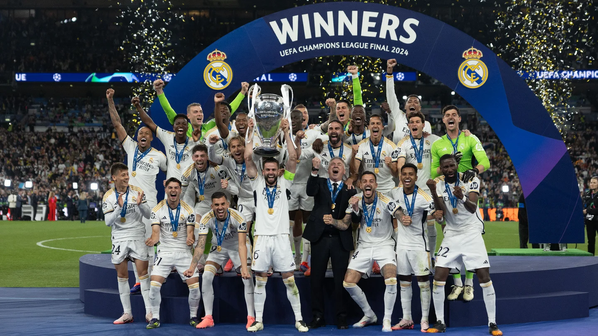

El Real Madrid Club de Fútbol, más conocido simplemente como Real Madrid, es una entidad polideportiva con sede en Madrid (España). Fue registrada oficialmente como club de fútbol por sus socios el 6 de marzo de 1902 con el objeto de la práctica y desarrollo de este deporte, si bien sus orígenes datan del año 1900,10 y su denominación de (Sociedad) Madrid Foot-ball Club de octubre de 1901, siendo el quinto club fundado en la capital.n. 3 Tuvo a Julián Palacios y los hermanos Juan Padrós y Carlos Padrós como principales valedores de su creación.11 La entidad adquirió su designación actual el 29 de junio de 1920 mediante el otorgamiento del título honorífico de «Real» por parte de su majestad el rey Alfonso XIII de España, quien también conferiría la distinción visual correspondiente incorporando la corona real en su emblema.1213 Identificado por su color blanco (del que recibe el apelativo de «blancos» o «merengues»),12 es uno de los cuatro clubes profesionales de fútbol del país cuya entidad jurídica no es la de sociedad anónima deportiva (S. A. D.),n. 4 ya que su propiedad recae en sus más de 90 000 socios.14 Otra salvedad comparte con el Athletic Club y el Fútbol Club Barcelona al participar sin interrupción en la máxima categoría de la Liga Nacional de Fútbol Profesional, la Primera División de España, desde su establecimiento en 1929.1516 En ella posee los honores de haber sido el primer líder histórico de la competición,17 el de equipo con más títulos, y el de la máxima puntuación en una sola edición.18n. 5 Abocado desde sus inicios al desarrollo del balompié, pronto adquirió un carácter multideportivo y desarrolló varias otras disciplinas que fueron desapareciendo con el devenir de los años,1920 a excepción de la sección de baloncesto, denominada Real Madrid Baloncesto.21n. 6 Hubo varias especulaciones en la historia reciente de la entidad sobre la posibilidad de recuperar algunas de ellas como la sección de balonmano,n. 7 o la sección de rugby que no llegaron a materializarse,n. 8 al contrario que una sección femenina de fútbol, parcela que desde los años 2010 el club trabajaba por crear con una base desde el ciclo formativo hasta la máxima categoría.22n. 9 Finalmente en 2019, y tomando otra de las posibles vías para su creación, se produjo la fusión por absorción del Club Deportivo TACON aprobándose en una reunión extraordinaria por parte de los socios compromisarios y conformar así el Real Madrid Club de Fútbol femenino.232425
